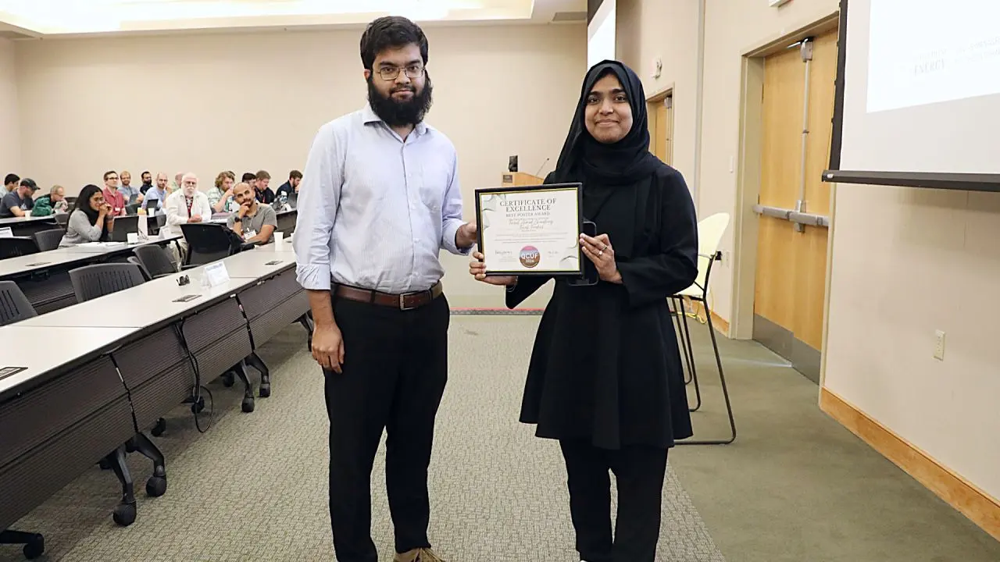
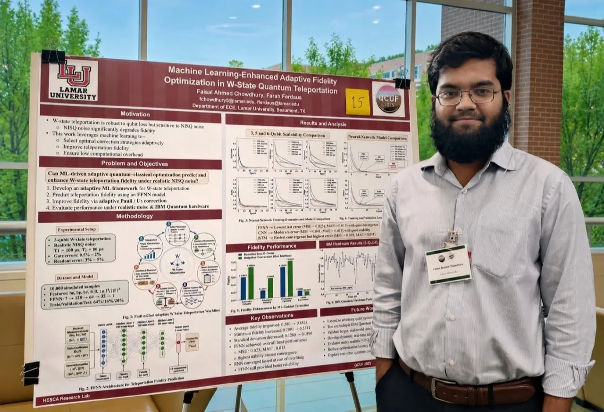
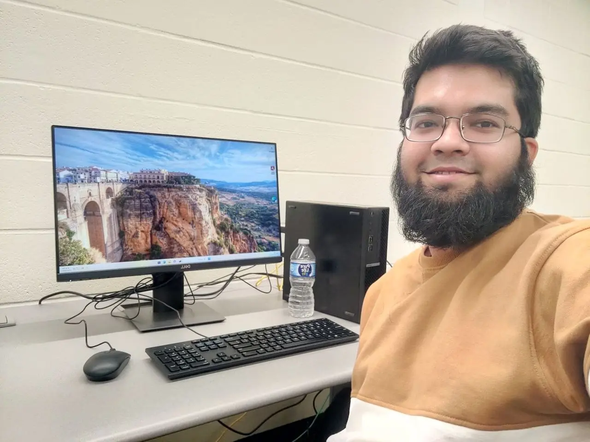

Graph-residual surface-code decoding
A disagreement-gated framework that selectively corrects mismatched MWPM decisions with graph-residual learning and confidence-based safeguards.
I study quantum error correction and build practical decoders for reliable quantum systems.
Work at the intersection of quantum error correction, machine learning, and hardware-aware systems.
A disagreement-gated framework that selectively corrects mismatched MWPM decisions with graph-residual learning and confidence-based safeguards.
Adaptive machine-learning correction for improving teleportation fidelity under realistic quantum noise, evaluated through simulation and IBM Quantum experiments.
Cross-platform evaluation of quantum image preprocessing across QCNN, QuanvNet, and QViT using accuracy, F1, calibration, throughput, and energy metrics.
Machine-learning and fuzzy-logic methods for predictive photonic modeling and sensitive PCF-SPR biosensing.
IEEE Quantum Week 2026 · Workshop Track
IEEE Quantum Week 2026 · Workshop Track
Quantum Computing User Forum · Oak Ridge National Laboratory
IEEE COMPAS 2024
IEEE ICECE 2024
IEEE ICRPSET 2024
Under peer review in Advanced Sensor Research
I am a Master of Engineering Science student in Electrical and Computer Engineering at Lamar University.
My work combines realistic surface-code simulation, mismatch-aware inference, graph-residual learning, and confidence-based safety gates. I want to turn strong logical-error performance into scalable, latency-conscious decoding systems.
I am also interested in qLDPC codes, computer architecture, secure systems, memory, and quantum communication.
Read my CV →Lamar University · Electrical and Computer Engineering
Quantum error correction and hybrid classical–quantum systems.Lamar University · Beaumont, Texas
BSRM Steels Limited · Chittagong
Chittagong University of Engineering and Technology
Work, people, and the journey.


